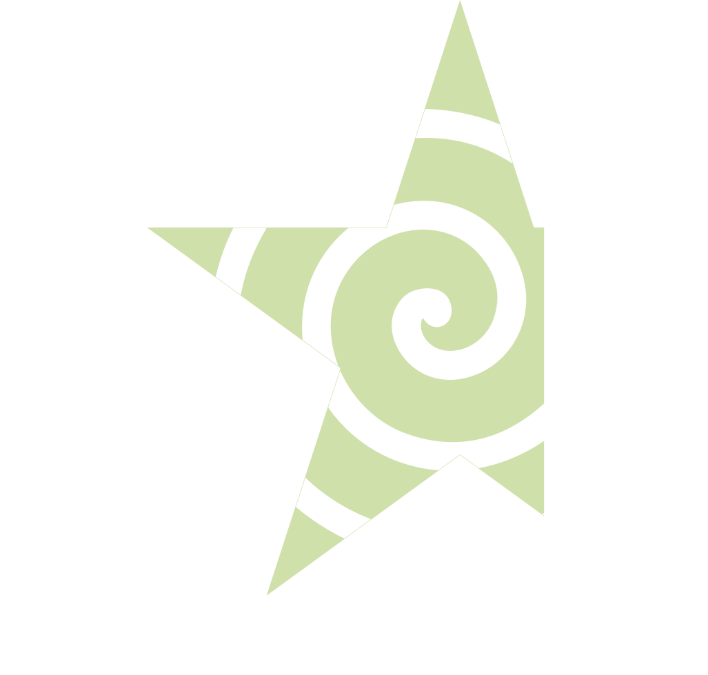
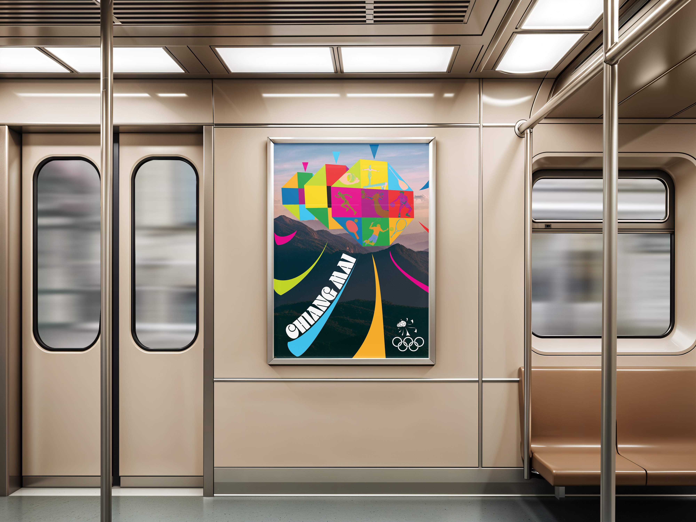
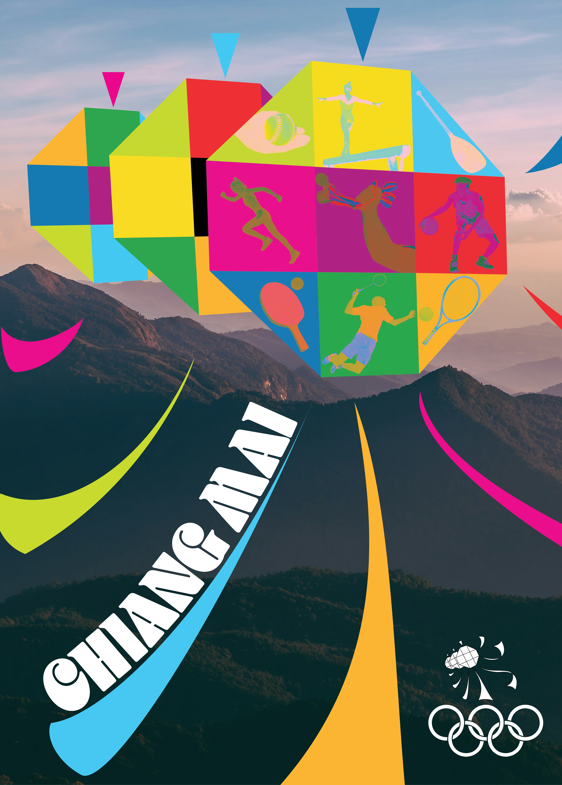

Olympic Poster
2025, Adobe Illustrator & Photoshop, 18in x 25in
I created this poster as part of a project focused on designing materials for a hypothetical future Olympics. For inspiration, I explored past Olympic posters and was particularly drawn to the bold and modern design of the 1972 Munich Olympics. I also incorporated the vibrant colors and lively atmosphere of the chosen host city—Chiang Mai, Thailand—to bring the design to life.




